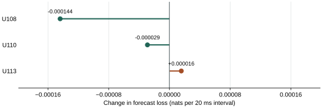

NeuroTranslation · Research report
What a fingertip nerve sends as glass slides
A glass plate slides under a finger. How much can its motion tell us about the next signal that travels up the arm?
The experiment recorded 13,687 spikes in 69,137 test intervals across three people. Giving the shared model the force from the actual slide improved its forecast for 2 of them compared with giving it the force from the previous slide.
The lowest equal-person loss was 0.34538 for touch-only model · recorded force. The eight-task model scored 0.35799 with the recorded force. Each person contributes one third of the mean, even when their recordings supply different numbers of windows.

The authors of the original experiment measured three forces on the plate and recorded brief electrical events, called spikes, from one sensory nerve fibre at a time. Their camera also showed the skin changing shape. Our forecast uses the force and the earlier spikes. The two optical files we audited contain 220 processed slices from recordings with 310 camera frames. The available files did not establish which camera frame went with each saved slice. Original experiment · Data archive
Try it on your computer
Download the model and demo · Read the PDF
Extract the ZIP, install Python 3.10 or later and NumPy, then open Touch study for your operating system. In the Command box, type “How many spikes will the touch nerve send?” Change a sideways force reading, run the forecast and compare the expected counts. The starting example is invented. Explore the fingertip in 3D. The same eight-task model can also run the seven earlier forecasts. Installation guide
Read the human-to-macaque follow-up. A model trained on human spike counts predicts the next 20 milliseconds of recorded macaque activity.
The model predicts an average count over a short interval. A value of 0.2 means one spike per five such intervals on average. It cannot identify exactly which interval contains the spike from that number alone.
Can the model tell one slide from another?
Each trial repeated a movement of the plate. Force from the previous slide can therefore carry clues about when loading begins. We kept the active nerve’s earlier spikes and elapsed time fixed and substituted the previous slide’s forces. We matched the material and direction and used the same eligible windows for each forecast. We also fitted a simple statistical model with and without those forces.
| Forecast | U108 | U110 | U113 | Equal-person mean |
|---|---|---|---|---|
| Touch-only model · recorded force | 0.41717 | 0.51918 | 0.09978 | 0.34538 |
| Touch-only model · previous slide’s force | 0.41741 | 0.51917 | 0.09977 | 0.34545 |
| Eight-task model · recorded force | 0.43417 | 0.52623 | 0.11357 | 0.35799 |
| Eight-task model · previous slide’s force | 0.43431 | 0.52626 | 0.11355 | 0.35804 |
| Simple model · previous slide’s force | 0.45330 | 0.58551 | 0.14317 | 0.39399 |
| Simple model · recorded force | 0.45340 | 0.58547 | 0.14321 | 0.39403 |
| Simple model · time and earlier spikes | 0.45257 | 0.59072 | 0.14811 | 0.39713 |
| Average training rate | 0.48029 | 0.76397 | 0.18205 | 0.47544 |
The score is Poisson negative log likelihood, in nats per 20 ms interval. It penalizes assigning a low expected count where spikes occur and a high count where none occur. Lower is better. Here the average change for actual versus previous-slide force in the eight-task model was -0.00005. Resampling the three people gave a descriptive 95% interval of -0.000119 to +0.000006, which crosses zero. Three people give limited evidence about a fourth.
| Person | Intervals | Recorded spikes | Eight-task expected total | Touch-only expected total |
|---|---|---|---|---|
| U108 | 31,062 | 5,222 | 4,935.6 | 4,704.0 |
| U110 | 27,721 | 8,150 | 7,533.5 | 7,416.3 |
| U113 | 10,354 | 315 | 429.3 | 388.1 |
A count total tests whether a model predicts too many or too few spikes overall. Two forecasts can give similar totals and still disagree on when the spikes happen. The result tables also give errors by receptor class, surface and direction within each person.
What changed in the shared model?
One set of 8,576 parameters learns from eight tasks. Small input and output layers give each instrument its own channel order and units. Together these make 21,830 trainable parameters. The saved eight-task checkpoint occupies 109,034 bytes.
Every update used 32 examples from each task. For touch, we first sampled a person, then a window within that person. The seven earlier tasks kept their original initialization, example draws and number of updates. The eight-task training run saw more examples in total because it also saw touch. The simpler regressions gave each training window equal weight. A separate model trained on touch alone saw the same touch examples and began with the same shared and touch weights.
| Task and assessment | Unit | Seven tasks | Eight tasks |
|---|---|---|---|
| Human lower-leg muscle activity | µV RMS | 10.116 | 10.078 |
| Human pelvis path | mm | 2.6445 | 2.647 |
| Macaque hand and handle · block 1 | mm | 4.4038 | 4.3904 |
| Macaque hand and handle · block 2 | mm | 4.4116 | 4.4141 |
| Macaque sensory cortex · block 1 | nats/contact | 2.367 | 2.4584 |
| Macaque sensory cortex · block 2 | nats/contact | 2.4711 | 2.5117 |
| Next recorded rat unit · JS14 | nats/event | 2.7858 | 2.783 |
| Next recorded rat unit · ER1 | nats/event | 3.2875 | 3.286 |
| Neural fluorescence · fish | training SD | 0.070703 | 0.071398 |
| Camera landmarks · 120 ms | body radii | 0.092223 | 0.092565 |
| Camera landmarks · 200 ms | body radii | 0.13814 | 0.1349 |
The eight-task fit had lower error on 5 of the 11 previous assessments. A loss is measured within its own task and recording. A millimetre of hand error and a missed nerve spike have different meanings.
The seven-task fit remains the default. The eight-task fit had higher error on six earlier assessments, and the touch-only fit made better touch forecasts in each of the three new people. The Touch study launcher lets you run and compare the experimental shared weights.
What went into each forecast?
We traced 35 deposited recording files to 27 sensory fibres in 13 people. Seven people supplied training data and two more supplied development checks. We froze the model before comparing its predictions with recordings from three other people. One person remains in reserve. Files from the same person stayed together.
The history ends at time t. Each of ten consecutive 20 ms rows contains the three average force readings in newtons, the number of recorded spikes and elapsed trial time. The target is the number of spikes between 20 and 40 ms after t, counting the right edge. To make the next forecast the model can see spikes that have since happened. Saved predictions were fixed before the future spike counts were scored.
The source marked invalid trials. The comparison takes adjacent fully valid trials on the same surface moving in the same direction. It requires finite source readings and checks target availability separately. Of 280 held trial slots, 207 supplied matched repetitions. One forecast had a missing future spike sample and could not be scored. The training set supplied 176,685 eligible touch windows.
Reproduce the comparison
Run python predict.py --touch --example human_touch_afferent inside the extracted model folder. The checkpoint fingerprint lets you check which weights made a forecast. The training and evaluation files include the frozen group assignments, data instructions, matched simpler models and results. Recorded nerve and force histories are available from the original authors.
Delhaye BP, Jarocka E, Barrea A, Thonnard J-L, Edin BB and Lefèvre P (2021). High-resolution imaging of skin deformation shows that afferents from human fingertips signal slip onset. eLife 10:e64679. Study · Zenodo data release, CC BY 4.0. This analysis derives trial windows, fits models and compares their predictions.